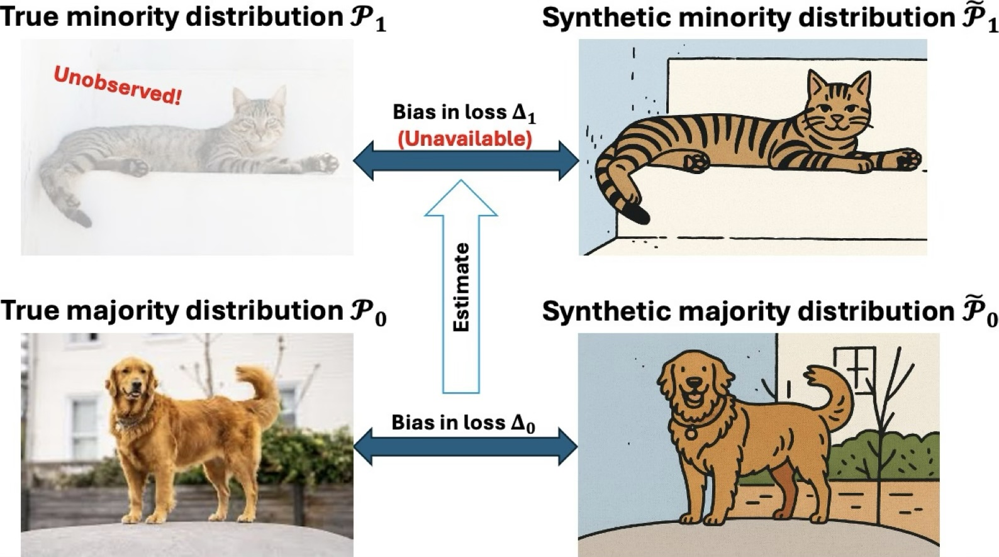
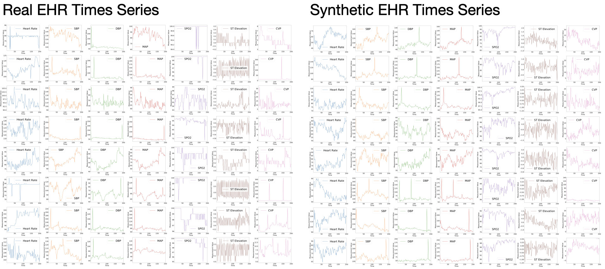
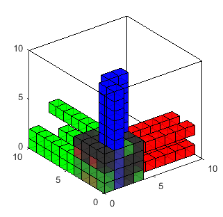
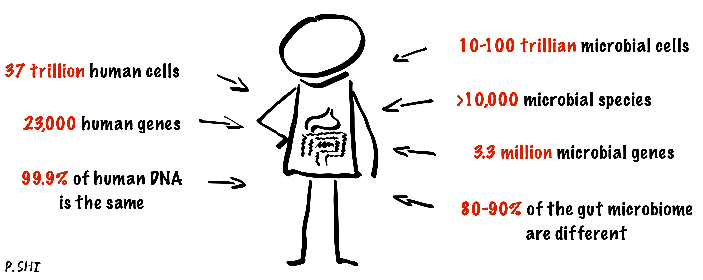
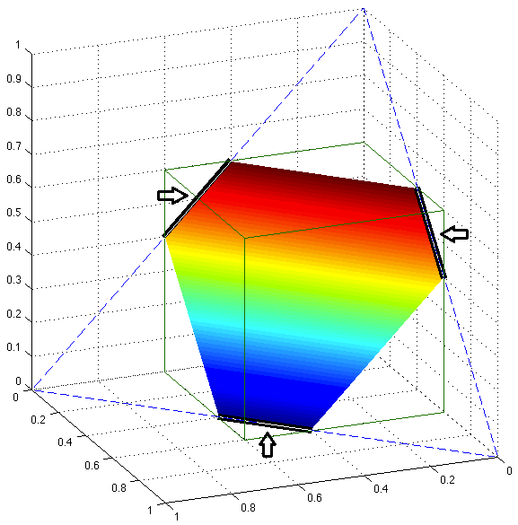
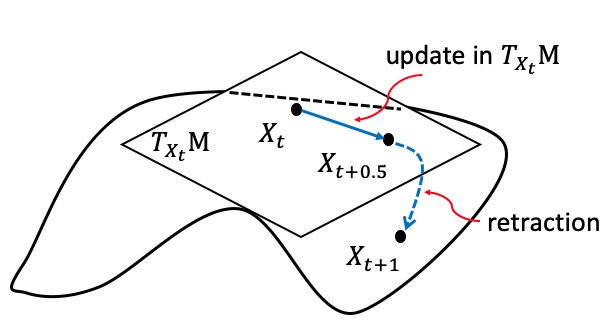
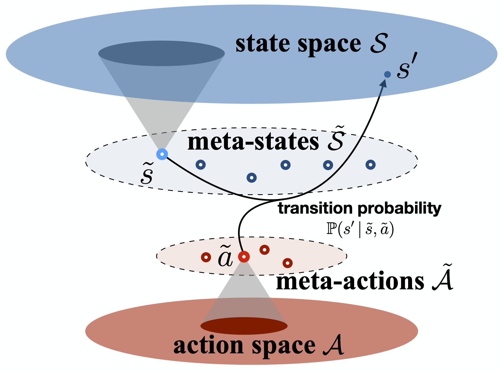
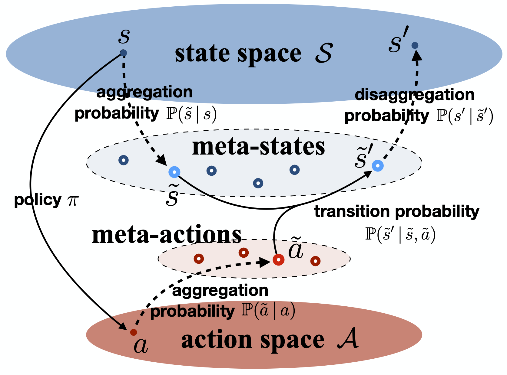
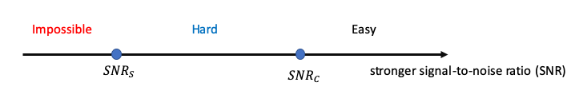

From foundations to scientific impact.
My group develops statistical and machine-learning theory, methods, and algorithms for modern high-dimensional and structured data, while working closely with scientific problems in health and biomedicine.
Research areas
From statistical foundations to scientific and health applications. Select a topic to jump to it.
Statistical foundations
- High-dimensional StatisticsHigh-dimensional statistics studies inference when the number of variables is comparable to or greater than the number of observations, where classical low-dimensional methods can fail.
- Computational Complexity of Statistical InferenceWe study gaps between statistical limits and what computationally efficient algorithms can achieve, particularly in high-dimensional tensor and network problems.
Methods & computation
- Tensor Data AnalysisHigh-dimensional tensors arise in neuroimaging, microbiology, bioinformatics, and materials science, where complex structure creates both statistical and computational challenges.
- Nonconvex & Riemannian OptimizationRiemannian optimization uses geometric structure to solve optimization problems on manifolds, enabling efficient methods for complex and high-dimensional statistical problems.
- Markov (Decision) ProcessesWe study model reduction and representation learning for Markov processes and reinforcement learning, including state aggregation and low-dimensional representations of state-action dynamics.
Generative AI
- Generative ModelsGenerative models learn the underlying distribution of data and enable realistic synthetic generation for applications including simulation, privacy preservation, and data augmentation.
- Synthetic DataSynthetic data preserve key statistical patterns of real data while reducing reliance on sensitive or hard-to-access records, especially when privacy, limited sample size, or class imbalance make real-world data insufficient.
Science & health
- Health InformaticsElectronic health records provide rich longitudinal information on patient histories, treatments, and outcomes, creating opportunities for statistical and machine-learning research in healthcare.
- Microbiome Data AnalysisOur work addresses statistical challenges in compositional and longitudinal microbiome data, including regression, measurement error, dimensionality reduction, and microbial network analysis.
- Network AnalysisNetwork analysis studies relationships and interactions in complex systems, with our work focusing particularly on tensor networks, multilayer networks, and community structure.
- Collaborative ResearchInterdisciplinary collaboration connects our statistical methodology with problems in neuroscience, radiology, psychiatry, biomedical imaging, and other scientific domains.
Machine learning
Synthetic Data
Synthetic data preserve key statistical patterns of real data while reducing reliance on sensitive or hard-to-access records. Our work studies when synthetic augmentation improves prediction, when it introduces bias, and how much synthetic data to add, with applications where privacy, scarcity, fairness, and class imbalance matter.

Representative papers
- Synthetic augmentation in imbalanced learning: when it helps, when it hurts, and how much to add
- Bias-corrected data synthesis for imbalanced learning
- Reliable generation of privacy-preserving synthetic electronic health record time series via diffusion models
- Smooth flow matching for synthesizing functional data
Applications
Health Informatics
Electronic health records create challenges involving missingness, irregular timelines, phenotyping, data curation, and privacy. Our group develops methods for timeline registration, soft phenotyping, structured missingness, synthetic EHR data, and LLM-assisted curation.


Representative papers
- Reliable Curation of EHR Dataset via Large Language Models under Environmental Constraints
- Subtype-aware registration of longitudinal electronic health records
- Integrated Analysis for Electronic Health Records with Structured and Sporadic Missingness
- Soft phenotyping for sepsis via EHR time-aware soft clustering
Machine learning
Generative Models
We study modern generative models from both theoretical and methodological perspectives, including diffusion and flow models, discrete generation, representation alignment, language-model reasoning, time-series forecasting, and biomedical generation.
Representative papers
Methods
Tensor Data Analysis
High-dimensional tensors arise in neuroimaging, microbiology, bioinformatics, materials science, networks, and modern machine learning. We develop statistically principled and computationally efficient methods for tensor completion, regression, SVD/PCA, decomposition, clustering, perturbation analysis, and functional tensor data.

Representative papers
Applications
Microbiome Data Analysis
Our work addresses statistical challenges in compositional and longitudinal microbiome data, including regression, error-in-variable modeling, dimensionality reduction, and multi-kingdom microbial networks.

Representative papers
Foundations
High-dimensional Statistics
High-dimensional statistics studies inference when the number of variables is comparable to or larger than the sample size. Our work includes compressed sensing, covariance estimation, sparse regression, low-rank matrix recovery, perturbation theory, and sharp nonasymptotic analysis.

Representative papers
Methods
Non-convex & Riemannian Optimization
Riemannian optimization exploits geometric structure when parameters live on manifolds or low-rank spaces. Our group studies the interaction of geometry, algorithms, statistical accuracy, over-parameterization, and computation in matrix and tensor problems.

Representative papers
Methods
Markov (Decision) Processes
We study model reduction and representation learning for Markov processes and reinforcement learning, including state aggregation, low-rank transition structure, and tensor structure in state-action dynamics.


Representative papers
Applications
Network Analysis
Our network research studies structure in multilayer, higher-order, and dynamic networks, including community detection, mixed memberships, stochastic block models, and functional tensor representations of evolving networks.
Representative papers
Foundations
Computational Complexity of Statistical Inference
In many high-dimensional problems, statistically optimal procedures may be computationally infeasible while efficient algorithms require stronger signal or more data. We study these statistical-computational gaps, especially in tensor and network problems.

Representative papers
Applications
Collaborative Research
Interdisciplinary collaboration is a central part of the research program, including work across biomedical imaging, metabolomics, neuroscience, microbiome science, and other scientific domains.
Representative papers
- Self-supervised imaging denoising via low-rank tensor approximated convolutional neural network
- Serum and CSF metabolomics analysis shows Mediterranean Ketogenic Diet mitigates risk factors of Alzheimer's disease
- Universal interkingdom microbial network decomposes mammals despite varied climate, location, and seasonal influence